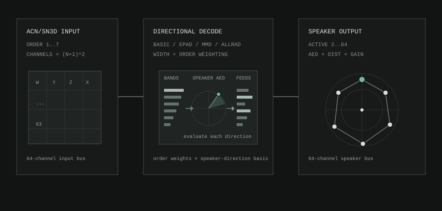

Ambi Decoder Speaker
s3g Ambi Decoder Speaker 64 decodes ambisonic ACN/SN3D input to a 64-channel speaker output bus. Use it when the REAPER session's speaker layout is part of the composition, installation, or encoded-field chain.
The decoder supports first through seventh order. The output bus stays 64 channels so routing is predictable; the active speaker count decides which output lanes are used.
DOME 25 layout in top view.Workflow
- Insert
s3g Ambi Decoder Speaker 64after the encoded source and any Ambisonic processing on a 64-channel track. MatchORDERto the source, then choose the speakerLAYOUTand activeCOUNT, entering measured positions inCUSTOMwhen needed. - Route each active output lane to its matching physical speaker feed.
- Set the decode
MODEandWGT, verify the output map, and trim individual outputs while audio is playing.
Signal Flow
- Read the active ambisonic channels from the input bus.
- Build a speaker matrix from the selected order and layout.
- Write one output lane per active speaker and silence unused lanes.

Related Decoders
- Ambi Decoder Object adds a derived directional object path to the complete speaker decode.
- Ambi Decoder Adaptive changes high-frequency focus from confidence and transient cues.
- Ambi Decoder Sub creates one to eight low-frequency feeds for a separate bass-management path.
Layouts
The layout menu provides thirteen curated speaker geometries plus custom generation and editing. Choosing a preset sets its active speaker count; changing COUNT, FIELD, or an individual speaker position changes the layout to CUSTOM.
For room-style presets, speaker numbering starts at the stereo-right position and moves clockwise around each elevation layer, then continues upward. DOME 24 and DOME 25 follow the s3g-mc dome panner structure: 12 lower speakers, 8 middle speakers, 4 upper speakers, and a top point for DOME 25. SPHERE 24 uses the fixed 24-direction ordering expected by the Ambi Effect workflows.
| Layout | Use |
|---|---|
CUSTOM |
Generate 2 to 64 speakers over a full sphere or upper hemisphere, then edit speakers directly. |
CUBE 8 |
Eight normalized corner directions around a full cube. |
CUBE 17 |
The 17-point cube layout used by the s3g-mc cube panner. |
CUBE 41 |
A 41-speaker upper cube surface whose Cartesian edge and corner distances are preserved. |
DODECA 12 |
A symmetric 12-direction full-sphere geometry. |
DOME 24 |
Twenty-four-speaker hemisphere dome: 12 lower, 8 middle, and 4 upper speakers. |
DOME 25 |
DOME 24 plus a zenith speaker, matching the s3g-mc 25-channel dome panner shape. |
ICOSAHEDRON 20 |
A symmetric 20-direction full-sphere geometry. |
LPAC 41 |
The 41-speaker LPAC room geometry, with horizontal, middle, upper, and top layers. |
OCTO RING |
Eight evenly spaced speakers around the horizontal plane. |
QUAD |
Four speakers at zero elevation. |
QUAD+OH |
Quad plus two speakers at -90 and +90 azimuth and +60 elevation. |
SRST 25 |
The 25-speaker SRST room-derived dome geometry, including its zenith speaker. |
SPHERE 24 |
The fixed 24-direction virtual sphere used by Ambi Effects and encoded-field routing. |
Controls
| Control | Meaning |
|---|---|
| LAYOUT | Selects one of the thirteen curated geometries or CUSTOM. A curated layout also sets its active speaker count. |
| ORDER | Selects the ambisonic order from 1OA to 7OA. |
| MODE | Chooses the decoder matrix style: BASIC, EPAD, MMD, or ALLRAD. |
| COUNT | Sets how many output lanes are used, from 2 to 64, changes the layout to CUSTOM, and generates a new speaker field. |
| FIELD | Chooses how CUSTOM layouts are generated: SPHERE distributes speakers over a full sphere, and HEMI keeps them in the upper hemisphere. |
| WGT | Chooses ambisonic order weighting: NONE, MAXRE, or INPHASE. |
| WID | Scales the complete decoder matrix from 0 to 1.50; 1 is the neutral setting. |
| SEL | Selects the speaker edited by AZ, EL, and DST and used as the MAP probe. |
| AZ / EL / DST | Edit the selected speaker's azimuth, elevation, and radial distance. Editing a curated layout changes it to CUSTOM. |
| OUT | Sets final output gain from -60 to +12 dB. |
| FIELD view | Shows the selected speaker geometry and its layout or ALLRAD topology. |
| MIXER | Switches the large left view to per-speaker GAIN trims, mute/solo buttons, and the final OUT gain. Speaker gains are shown 16 at a time, with more pages as needed. |
| MAP | Switches the large left view to a decoder map. It uses the current selected-speaker AZ/EL direction as a probe and shows which speakers receive energy from the current order, weighting, mode, gains, and layout. |
Changing COUNT or FIELD creates a new CUSTOM layout automatically. AZ, EL, and DST have sliders for quick movement and text boxes for exact entry. A speaker can also be selected directly in the field. The mixer provides exact gain fields as well as faders; gain ranges from 0 to 2, and double-clicking a fader restores unity.
INIT rebuilds a 24-speaker full-sphere CUSTOM layout with EPAD, 3OA, MAXRE, SPHERE, and WID 1 while preserving the current OUT trim. LOAD recalls a saved Ambi Decoder Speaker state while also preserving the current OUT; SAVE writes the current decoder, speaker, mixer, and camera state as a portable preset.
Field View
The speaker field follows the same camera convention as the Ambi Encoder Point. TOP draws 0 degrees at the top, 180 at the bottom, -90 to the right, and +90 to the left. SIDE draws positive elevation upward. 3/4 is for inspecting layers and custom layouts.
Use - / + to zoom the camera view. Drag blank space in the field to rotate the view. Camera movement changes only the visual inspection angle, not speaker AED positions. The selected camera view, manual rotation, and zoom are saved with the host project.
Outside ALLRAD, connection lines show the intended layout mesh, not nearest-neighbor analysis and not speaker list order. A cube draws as a cube. A dome draws as rings with vertical layer connections. In ALLRAD, the field instead shows the topology used by that decoder.
The ordinary field uses shared AED color, while MAP replaces it with a normalized low-to-high response scale. See Interpreting Color before comparing the two views.
Choosing a Decode Mode
Choose BASIC for direct speaker-basis weighting and a clear reference decode. Choose EPAD for a regularized, energy-preserving matrix decode. Choose MMD to blend direct and energy-weighted behavior. Choose ALLRAD to decode through a virtual quadrature field and remap it to the active real-speaker topology with vector-base amplitude panning.
WGT is separate from MODE. It tapers ambisonic orders before the signal reaches the speaker outputs. MAXRE is the default because it usually gives a useful balance of localization and stability. INPHASE is more conservative and can help with irregular layouts. NONE leaves the orders unweighted for comparison.
ALLRAD Topology
ALLRAD follows the all-round Ambisonic decoding method listed under Spatial Audio and Ambisonics. It treats an all-horizontal array as a 2D ring and other arrays as a 3D sphere, then constructs a closed panning topology from the enabled speakers. When a hemisphere or irregular custom array leaves coverage gaps, the decoder can add virtual support directions: GAP supports close uncovered regions and discard the share directed outside the physical array, while FOLD supports distribute their share over the surrounding real speakers. Support directions help construct the matrix and never become output lanes.
The field footer reports ALLRAD, the number of REAL speakers, added GAP and FOLD supports, and the resulting 2D, 3D, or INVALID topology. Muting a speaker removes it from the ALLRAD solve and rebuilds the topology so the remaining speakers are rebalanced. Solo is an audition gate and does not change the matrix. If a valid topology cannot be constructed, the decoder uses a finite direct fallback rather than exposing support nodes or leaving the active outputs silent.
REAPER Setup
Use a track with enough channels for the selected ambisonic input and speaker output. The plugin has a fixed 64-channel input bus and fixed 64-channel output bus so REAPER pin routing remains stable while layout and order change inside the plugin.
For Ambi Effect reference work, use SPHERE 24 as the virtual speaker layout. For real speaker playback, start with the layout closest to the room, then switch to CUSTOM for measured speaker positions.